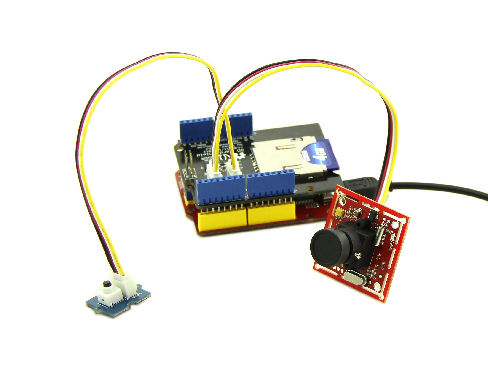
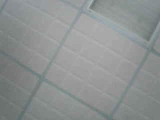
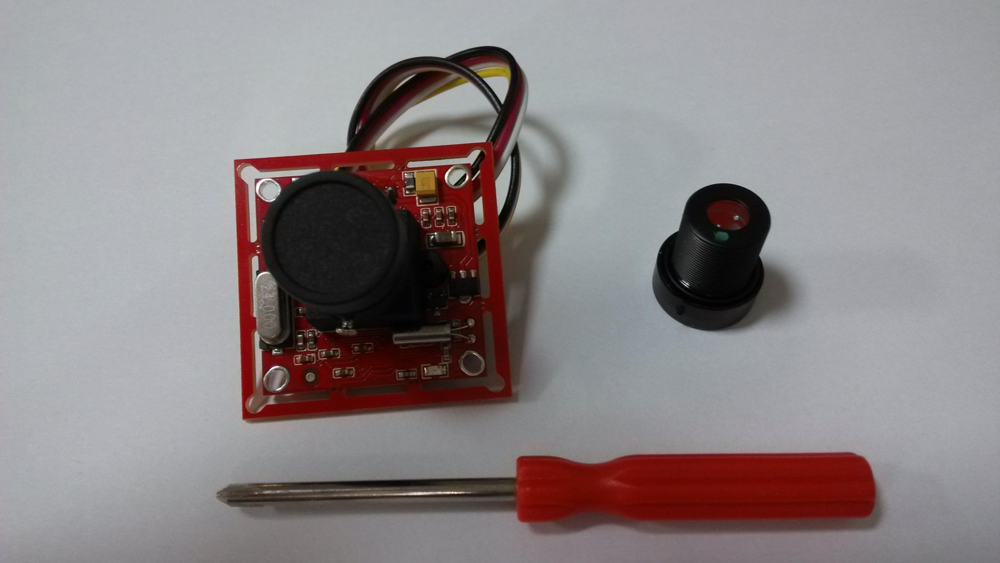
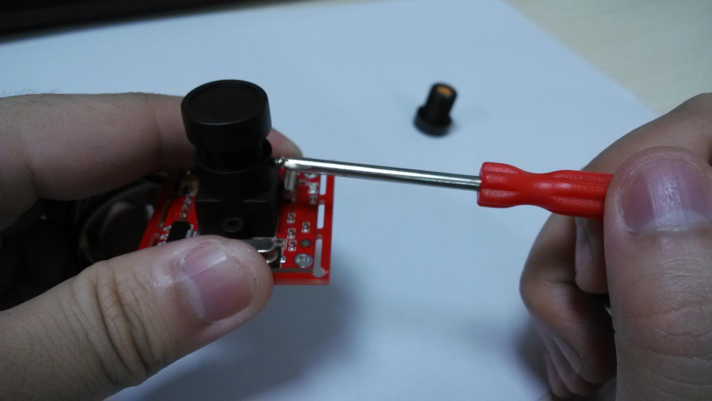
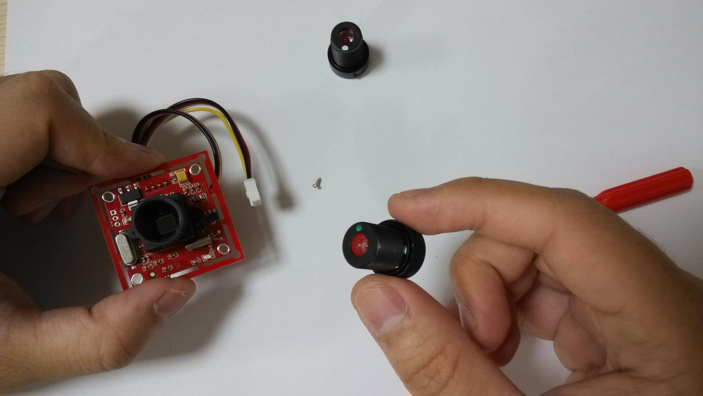
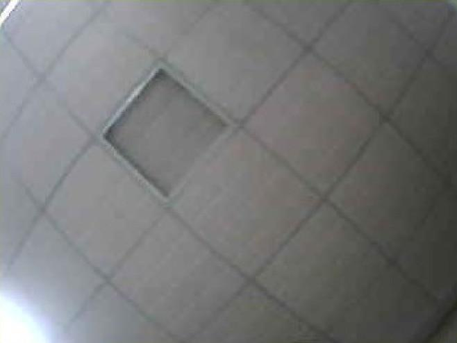

Grove - Serial Camera Kit includes one control board and two interchangeable lenses, one is standard lens and the other is wide-angle lens. It's a great camera for Arduino centered image recognition projects, because 30W pixel wouldn't be overwhelming for Arduino, so that real-time image recognition is possible. To make it more fun and playable, lenses of two specs are shipped in this kit. The standard one is for common photo shots and the wide-angle one is specially suitable for monitoring projects.
This demo will show you how to use Grove - Serial Camera Kit. We need a Seeeduino, an SD Card Shield and a Grove - Button. When the button pressed, we take a photo and save it to SD Card. Follow the below steps step by step, you can easily run your Grove - Serial Camera Kit. Then let's go.
We can find that there are two Grove interfaces on SD Card Shield V4.0, so we needn't a Base Shield, just plug Button to I2C Grove and plug Camera to Uart Grove.

You can download demo code in github, click here
Then upload the code, and it works.
After finish uploading demo code, we can take a photo now, just press the button, then wait for a few seconds, a photo will be saved to SD card.
The following image is the ceiling of my office use straight angle lens.

There is another wide-angle lens, I will show you how to replace it.
Firstly you should have a screwdriver：

Then, unscrew the screws on the side of lens:

Try rotating the lens, it can be screwed out：

We use the wide-angle lens to take a photo, also, it's the ceiling of my office!
Find anything different from the ceiling image previous?

Lens screwed different depths represent different focal length, you can have a try.
Copyright (c) 2008-2016 Seeed Development Limited (www.seeedstudio.com / www.seeed.cc)